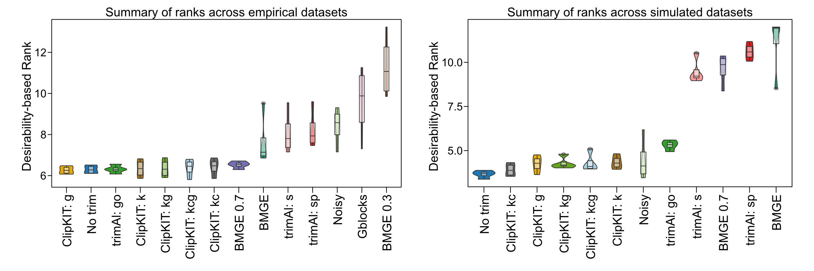
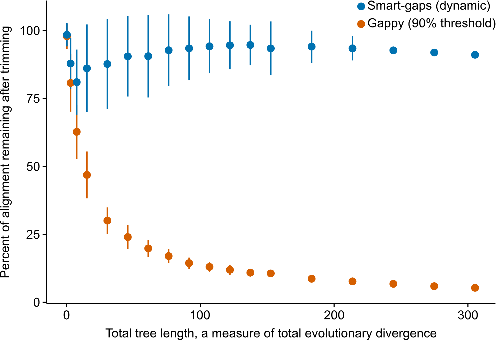

Performance Assessment¶
Benchmarking ClipKIT¶
In brief, performance assessment and comparison of multiple trimming alignment software revealed that ClipKIT is a top-performing software.
ClipKIT is a top-performing software for trimming multiple sequence alignments. Across a total of 138,152 multiple sequence alignments (MSAs) from empirical (left) and simulated (right) datasets, desirability-based integration of accuracy and support metrics per MSA facilitated the comparison of relative software performance and revealed ClipKIT is a top-performing software. MSA trimming approaches are ordered along the x-axis from the highest-performing software (left) to the lowest-performing software (right) according to average desirability-based rank, which is derived from measures of tree accuracy (i.e., normalized Robinson Foulds distance) and tree support (i.e., average bipartition support).
Abbreviations of trimmers and parameters are as follows: ClipKIT: g = gappy mode; ClipKIT: kc = kpic; ClipKIT: kcg = kpic-gappy; ClipKIT: k = kpi mode; ClipKIT: kg = kpi-gappy mode; BMGE = BMGE default; BMGE 0.3 = 0.3 entropy threshold; BMGE 0.7 = 0.7 entropy threshold; trimAl: s = strict; trimAl: sp = strictplus; Noisy = default; Gblocks = default; No trim = no trimming.
For additional details about performance assessment, please see ClipKIT: a multiple sequence alignment trimming software for accurate phylogenomic inference. Steenwyk et al. PLoS Biology. doi: 10.1371/journal.pbio.3001007.
smart-gap¶
Starting with version 1.1.0, a dynamic gappyness threshold determination approach (referred to as smart-gap) has been introduced into ClipKIT and is now the default trimming approach. The motivation of smart-gap stems from excessive trimming among highly divergent sequences.
For example, in the figure above, we simulated 100 sequences for various trees with 100 tips. Each tree had a different total tree length, a measure of total evolutionary divergence (x-axis). Differences in total tree length were generated by multiplying the branch lengths of the starting random tree (generated using IQTREE2) by a factor ranging from 0.25 to 10. Thus, the same tree shape and relative branch lengths were used during the simulations. Simulations were generated using INDELible. Examining the percentage of the alignment remaining after trimming revealed using a strict gappy threshold of 90% resulted in ‘extreme’ trimming, which is not recommended (Tan et al. (2015)). In contrast, smart-gap retains a large fraction of the alignment and only removes the most gappy sites. Thus, smart-gap is a better approach for sequence alignments that span deep and shallow evolutionary timescales.
More specifically, when implementing the smart-gap approach, ClipKIT first examines the distribution of gaps across the alignment. Next, ClipKIT determines the gap-to-gap slope between each gappyness bin. By examining the maximum difference in the slope between each adjacent bin, ClipKIT determines what step would correspond to removing a large number of sites in comparison to other steps. Of note, ClipKIT only examines the first half of slopes calculated so as to not trim too much of the alignment. ClipKIT will then choose the threshold that ensures the large number of sites will not be trimmed.
For example, in the the following test alignment:
>1
A-GTAT-
>2
A-G-AT-
>3
A-G-TA-
>4
AGA-TA-
>5
ACa-T-G
there are two sites with four gaps, one site with three gaps, and one site with one gap. ClipKIT will calculate the slope between sites with greater than or equal to 80% gaps and removing 2/7ths of the alignment and sites with greater than or equal to 60% gaps and removing 3/7ths of the alignment. Next, ClipKIT will determine the slope between sites with greater than or equal to 60% gaps and removing 3/7ths of the alignment and sites with greater than or equal to 20% gaps and removing 4/7ths of the alignment and so on and so forth. Next, ClipKIT will examine the first half of slope values and use the less strict gaps threshold from the two points that generated the greatest slope.